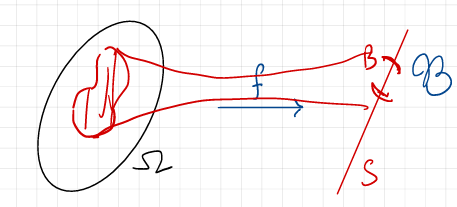
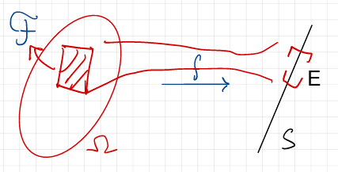

14 Lecture 6.2: Measurable Functions
14.1 Preimages vs. Images
Let \(f: \Omega \to S\) be a function between two arbitrary sets.
The function \(f\) naturally induces two set maps:
- Image Map: \(2^\Omega \to 2^S\), defined by \(A \mapsto f(A) = \{f(\omega) : \omega \in A\} \subseteq S\).
- Preimage Map: \(2^S \to 2^\Omega\), defined by \(E \mapsto f^{-1}(E) = \{\omega \in \Omega : f(\omega) \in E\} \subseteq \Omega\).
The image set map is not well-behaved with respect to set operations: one always has \(f(A \cap B) \subseteq f(A) \cap f(B)\), but the inclusion may be strict unless \(f\) is injective. By contrast, the preimage map \(E \mapsto f^{-1}(E)\) preserves all standard set operations: for any family \(\{E_\alpha\} \subseteq 2^S\) and any \(E \subseteq S\), \[ \begin{align*} &f^{-1}\left( \bigcup_\alpha E_\alpha \right) = \bigcup_\alpha f^{-1}(E_\alpha), \\ &f^{-1}\left( \bigcap_\alpha E_\alpha \right) = \bigcap_\alpha f^{-1}(E_\alpha),\\ &f^{-1}(S \setminus E) = \Omega \setminus f^{-1}(E). \end{align*} \]
14.2 Pull-Back and Push-Forward \(\sigma\)-Algebras
Pull-back and push-forward \(\sigma\)-algebras are two fundamental constructions in measure theory that allow us to transfer \(\sigma\)-algebra structures between different measurable spaces via a function.
Definition 14.1 (Pull-Back and Push-Forward \(\sigma\)-Algebras) Let \((\Omega, \mathcal{F})\) and \((S, \mathcal{B})\) be measurable spaces, and let \(f: \Omega \to S\) be a function.
- The pull-back of \(\mathcal{B}\) to \(\Omega\) by \(f\) is: \[ f^* \mathcal{B} := \{ f^{-1}(B) \subseteq \Omega : B \in \mathcal{B} \} \subseteq 2^\Omega. \]
- The push-forward of \(\mathcal{F}\) to \(S\) by \(f\) is: \[ f_* \mathcal{F} := \{ E \subseteq S : f^{-1}(E) \in \mathcal{F} \} \subseteq 2^S. \]
Proposition 14.1 (Both Constructions Yield \(\sigma\)-Algebras) In the setting of Definition 14.1, \(f^* \mathcal{B}\) is a \(\sigma\)-algebra on \(\Omega\) and \(f_* \mathcal{F}\) is a \(\sigma\)-algebra on \(S\).
Proof (Proof of Proposition 14.1). Both claims follow from the fact that preimages commute with complements and countable unions.
For \(f^* \mathcal{B}\): we have \(\Omega = f^{-1}(S) \in f^* \mathcal{B}\); if \(A = f^{-1}(B)\) with \(B \in \mathcal{B}\), then \(\Omega \setminus A = f^{-1}(S \setminus B) \in f^* \mathcal{B}\); and if \(A_n = f^{-1}(B_n)\) with \(B_n \in \mathcal{B}\), then \(\bigcup_{n} A_n = f^{-1}\left( \bigcup_{n} B_n \right) \in f^* \mathcal{B}\).
For \(f_* \mathcal{F}\): we have \(f^{-1}(S) = \Omega \in \mathcal{F}\), so \(S \in f_* \mathcal{F}\); if \(f^{-1}(E) \in \mathcal{F}\), then \(f^{-1}(S \setminus E) = \Omega \setminus f^{-1}(E) \in \mathcal{F}\); and if \(f^{-1}(E_n) \in \mathcal{F}\) for all \(n\), then \(f^{-1}\left( \bigcup_{n} E_n \right) = \bigcup_{n} f^{-1}(E_n) \in \mathcal{F}\).
Some Remarks:
- The pull-back \(\sigma\)-algebra \(f^* \mathcal{B}\) is a \(\sigma\)-algebra on \(\Omega\) formed by taking the preimages of all sets in \(\mathcal{B}\).
- The push-forward \(\sigma\)-algebra \(f_* \mathcal{F}\) is a \(\sigma\)-algebra on \(S\) consisting of all subsets of \(S\) whose preimages under \(f\) are in \(\mathcal{F}\).


Example 14.1 Let \(\Omega=\mathbb R\), \(\mathcal F=\mathcal B(\mathbb R)\), \(S=[0,\infty)\), and \(\mathcal B=\mathcal B([0,\infty))\). Define \(f:\mathbb{R} \to [0,\infty)\) by \(f(x) = x^2\).
Take a Borel set \(B\subseteq[0,\infty)\). Its pull-back is \[ f^{-1}(B) = \{x\in\mathbb R:x^2\in B\}. \] For example, take \(B=[0,1]\). Then \[ f^{-1}([0,1]) = \{x:x^2\leq1\} = [-1,1]. \] Thus \([-1,1] \in f^* \mathcal{B}\). If \(B=(1,4]\), then its pull-back is \[ f^{-1}((1,4]) = \{x:1<x^2\leq4\} = [-2,-1)\cup(1,2]. \] Therefore, \([-2,-1)\cup(1,2] \in f^* \mathcal{B}\).
Now start with \(\mathcal F=\mathcal B(\mathbb R)\) and push it forward to \(S=[0,\infty)\): \[ f_*\mathcal F = \{E\subseteq[0,\infty): f^{-1}(E)\in\mathcal B(\mathbb R)\}. \] Take any Borel set \(E\in\mathcal B([0,\infty))\). Because \(f(x)=x^2\) is continuous, \(f^{-1}(E)\) is Borel in \(\mathbb R\). Therefore, \(E\in f_*\mathcal F\). Thus \[ \mathcal B([0,\infty)) \subseteq f_*\mathcal F. \] But in fact we have equality: \[ f_* \mathcal{B}(\mathbb{R}) = \mathcal{B}([0,\infty)). \]
More generally, for any collection of subsets \(\mathcal{E} \subseteq 2^S\), we can define the pull-back collection: \[ f^* \mathcal{E} := \{ f^{-1}(E) \subseteq \Omega : E \in \mathcal{E} \} \subseteq 2^\Omega. \]
Lemma 14.1 (Pull-Back and \(\sigma\)-Algebra Generation) Let \(\Omega\) and \(S\) be arbitrary sets, let \(f: \Omega \to S\) be an arbitrary map, and let \(\mathcal{E} \subseteq 2^S\) be a family of subsets. Then: \[ \sigma(f^* \mathcal{E}) = f^* \left( \sigma(\mathcal{E}) \right). \] No measurability assumption on \(f\) is required; this is what makes the lemma applicable before measurability is known.
Proof (Proof of Lemma 14.1). We prove two-way inclusion:
Inclusion \((\subseteq)\): By Proposition 14.1, \(f^*(\sigma(\mathcal{E}))\) is a \(\sigma\)-algebra on \(\Omega\). Since \(\mathcal{E} \subseteq \sigma(\mathcal{E})\), we have: \[ f^* \mathcal{E} \subseteq f^*(\sigma(\mathcal{E})). \] Since \(\sigma(f^* \mathcal{E})\) is the smallest \(\sigma\)-algebra containing \(f^* \mathcal{E}\), it follows that: \[ \sigma(f^* \mathcal{E}) \subseteq f^*(\sigma(\mathcal{E})). \]
Inclusion \((\supseteq)\): Define the set collection: \[ \mathcal{G} := \{ B \in \sigma(\mathcal{E}) : f^{-1}(B) \in \sigma(f^* \mathcal{E}) \}. \] We show that \(\mathcal{G}\) is a \(\sigma\)-algebra on \(S\):
- \(S \in \mathcal{G}\) since \(f^{-1}(S) = \Omega \in \sigma(f^* \mathcal{E})\).
- If \(B \in \mathcal{G}\), then \(f^{-1}(B^c) = (f^{-1}(B))^c \in \sigma(f^* \mathcal{E})\), so \(B^c \in \mathcal{G}\).
- If \(\{B_n\}_{n=1}^\infty \subseteq \mathcal{G}\), then \(f^{-1}\left( \bigcup_{n=1}^\infty B_n \right) = \bigcup_{n=1}^\infty f^{-1}(B_n) \in \sigma(f^* \mathcal{E})\), so \(\bigcup_{n=1}^\infty B_n \in \mathcal{G}\).
Moreover \(\mathcal{E} \subseteq \mathcal{G}\): for every \(E \in \mathcal{E}\) we have \(E \in \sigma(\mathcal{E})\), and \(f^{-1}(E) \in f^* \mathcal{E} \subseteq \sigma(f^* \mathcal{E})\).
Thus \(\mathcal{G}\) is a \(\sigma\)-algebra on \(S\) containing \(\mathcal{E}\). Therefore, by minimality of the generated \(\sigma\)-algebra, \(\sigma(\mathcal{E}) \subseteq \mathcal{G}\), which implies that for every \(B \in \sigma(\mathcal{E})\), \(f^{-1}(B) \in \sigma(f^* \mathcal{E})\). Consequently: \[ f^*(\sigma(\mathcal{E})) \subseteq \sigma(f^* \mathcal{E}). \] Both inclusions yield equality.
14.3 Measurable Functions
Definition 14.2 (Measurable Function) Let \((\Omega, \mathcal{F})\) and \((S, \mathcal{B})\) be measurable spaces. A function \(f: \Omega \to S\) is \((\mathcal{F}/\mathcal{B})\)-measurable if: \[ f^* \mathcal{B} \subseteq \mathcal{F}, \quad \text{i.e., } \forall B \in \mathcal{B}, \; f^{-1}(B) \in \mathcal{F}. \]
Some Remarks:
- A measurable function is one for which the preimage of every measurable set in \(S\) is a measurable set in \(\Omega\).
- If \(f:(\Omega,f^*\mathcal{B})\to (S,\mathcal{B})\) then, by definition, \(f\) is measurable. In this sense, the pull-back \(\sigma\)-algebra \(f^*\mathcal{B}\) is the “smallest” \(\sigma\)-algebra on \(\Omega\) that makes \(f\) measurable.
- If \(f:(\Omega,\mathcal{F})\to (S,f_*\mathcal{F})\) then, by definition, \(f\) is measurable. In this sense, the push-forward \(\sigma\)-algebra \(f_*\mathcal{F}\) is the largest \(\sigma\)-algebra on \(S\) with respect to inclusion that makes \(f\) measurable: every other such \(\sigma\)-algebra is contained in \(f_*\mathcal{F}\).
Example 14.2 Indicator Functions. Let \(A \subseteq \Omega\) and consider the indicator function \(\mathbf{1}_A: \Omega \to \mathbb{R}\). Then \(\mathbf{1}_A\) is \((\mathcal{F}/\mathcal{B}(\mathbb{R}))\)-measurable if and only if \(A \in \mathcal{F}\).
Proof. For any \(B \in \mathcal{B}(\mathbb{R})\) the preimage \((\mathbf{1}_A)^{-1}(B)\) depends only on \(B \cap \{0, 1\}\), and the four resulting cases are exhaustive and mutually exclusive: \[ (\mathbf{1}_A)^{-1}(B) = \begin{cases} \Omega & \text{if } 0 \in B \text{ and } 1 \in B, \\ A & \text{if } 1 \in B \text{ and } 0 \notin B, \\ A^c & \text{if } 0 \in B \text{ and } 1 \notin B, \\ \emptyset & \text{if } 0 \notin B \text{ and } 1 \notin B. \end{cases} \] If \(A \in \mathcal{F}\), then each of \(\Omega, A, A^c, \emptyset\) lies in \(\mathcal{F}\), so every preimage is in \(\mathcal{F}\) and \(\mathbf{1}_A\) is measurable. Conversely, if \(\mathbf{1}_A\) is measurable, then taking \(B = \{1\} \in \mathcal{B}(\mathbb{R})\) gives \(A = (\mathbf{1}_A)^{-1}(\{1\}) \in \mathcal{F}\).
Proposition 14.2 (Criterion for Measurability on Generators) Let \((\Omega, \mathcal{F})\) and \((S, \mathcal{B})\) be measurable spaces, and let \(\mathcal{E} \subseteq 2^S\) be a collection of subsets such that \(\sigma(\mathcal{E}) = \mathcal{B}\). A function \(f: \Omega \to S\) is \((\mathcal{F}/\mathcal{B})\)-measurable if and only if \(f^* \mathcal{E} \subseteq \mathcal{F}\).
Proof (Proof of Proposition 14.2).
- (\(\Rightarrow\)) If \(f\) is \((\mathcal{F}/\mathcal{B})\)-measurable, then \(f^* \mathcal{B} \subseteq \mathcal{F}\). Since \(\mathcal{E} \subseteq \mathcal{B}\), it immediately follows that \(f^* \mathcal{E} \subseteq \mathcal{F}\).
- (\(\Leftarrow\)) Assume \(f^* \mathcal{E} \subseteq \mathcal{F}\). Since \(\mathcal{F}\) is a \(\sigma\)-algebra containing \(f^* \mathcal{E}\), minimality of the generated \(\sigma\)-algebra gives \(\sigma(f^* \mathcal{E}) \subseteq \mathcal{F}\). By Lemma 14.1: \[ f^* \mathcal{B} = f^*(\sigma(\mathcal{E})) = \sigma(f^* \mathcal{E}) \subseteq \mathcal{F}. \] Hence \(f\) is \((\mathcal{F}/\mathcal{B})\)-measurable.
14.4 Real-Valued Measurable Functions and Random Variables
Example 14.3 Important Characterizations on \(\mathbb{R}\). A function \(X: \Omega \to \mathbb{R}\) is \((\mathcal{F}/\mathcal{B}(\mathbb{R}))\)-measurable if and only if any one of the following equivalent conditions holds:
- \(X^{-1}((-\infty, t]) = \{\omega \in \Omega : X(\omega) \le t\} = \{X \le t\} \in \mathcal{F}\) for all \(t \in \mathbb{R}\);
- \(X^{-1}((a, b]) = \{a < X \le b\} \in \mathcal{F}\) for all \(a, b \in \mathbb{R}\) with \(a < b\);
- \(X^{-1}((a, \infty)) = \{X > a\} \in \mathcal{F}\) for all \(a \in \mathbb{R}\).
These are equivalent by Proposition 14.2, because each of the three displayed collections generates \(\mathcal{B}(\mathbb{R})\). For the first two this is Proposition 3.2. For the third, \((a, \infty) = \mathbb{R} \setminus (-\infty, a]\), so the two collections generate the same \(\sigma\)-algebra: \[ \sigma(\{(a, \infty) : a \in \mathbb{R}\}) = \sigma(\{(-\infty, a] : a \in \mathbb{R}\}) = \mathcal{B}(\mathbb{R}). \]
Definition 14.3 (Borel Random Variable) Given a probability space \((\Omega, \mathcal{F}, \mathbb{P})\), a (Borel) random variable is an \((\mathcal{F}/\mathcal{B}(\mathbb{R}))\)-measurable function \(X: \Omega \to \mathbb{R}\).
14.5 Compositions and Continuous Functions
Proposition 14.3 (Composition of Measurable Functions) Let \((\Omega, \mathcal{F})\), \((S, \mathcal{B})\), and \((T, \mathcal{C})\) be measurable spaces. If \(f: \Omega \to S\) is \((\mathcal{F}/\mathcal{B})\)-measurable and \(g: S \to T\) is \((\mathcal{B}/\mathcal{C})\)-measurable, then the composition \(g \circ f: \Omega \to T\) is \((\mathcal{F}/\mathcal{C})\)-measurable.
Proof (Proof of Proposition 14.3). For any \(C \in \mathcal{C}\), using the preimage composition property: \[ (g \circ f)^{-1}(C) = f^{-1}(g^{-1}(C)). \] Since \(g\) is \((\mathcal{B}/\mathcal{C})\)-measurable, \(g^{-1}(C) \in \mathcal{B}\). Since \(f\) is \((\mathcal{F}/\mathcal{B})\)-measurable, \(f^{-1}(g^{-1}(C)) \in \mathcal{F}\). Thus \((g \circ f)^{-1}(C) \in \mathcal{F}\).
Corollary 14.1 (Continuous Transformations of Random Variables) Let \(X_1, X_2, \dots, X_d\) be random variables on \((\Omega, \mathcal{F}, \mathbb{P})\). If \(f: \mathbb{R}^d \to \mathbb{R}\) is Borel measurable (in particular, if it is continuous), then \(Y = f(X_1, \dots, X_d)\) is a random variable.
(Examples: \(X_1 + X_2\), \(X_1 X_2\), \(\max(X_1, X_2)\), etc.)
Proof (Proof of Corollary 14.1). If \(f\) is assumed Borel measurable, its \((\mathcal{B}(\mathbb{R}^d)/\mathcal{B}(\mathbb{R}))\)-measurability is part of the hypothesis. If \(f\) is continuous, then \(f^{-1}((-\infty, t])\) is closed, because \((-\infty, t]\) is closed, and closed sets are Borel; since \(\{(-\infty, t] : t \in \mathbb{R}\}\) generates \(\mathcal{B}(\mathbb{R})\) by Proposition 3.2, Proposition 14.2 shows that \(f\) is \((\mathcal{B}(\mathbb{R}^d)/\mathcal{B}(\mathbb{R}))\)-measurable.
Define the joint map \(\mathbf{X} = (X_1, \dots, X_d): \Omega \to \mathbb{R}^d\) and let \[ \mathcal{E} := \left\{ \prod_{j=1}^d (a_j, b_j) \;:\; a_j, b_j \in \mathbb{Q}, \; a_j < b_j \right\} \] be the countable collection of open boxes with rational vertices. Exactly as in Proposition 3.2, \(\mathcal{E}\) is a base for the topology of \(\mathbb{R}^d\): every open \(U \subseteq \mathbb{R}^d\) is the union of those members of \(\mathcal{E}\) contained in \(U\), and that union is countable because \(\mathcal{E}\) is countable. Hence \(\mathcal{B}(\mathbb{R}^d) \subseteq \sigma(\mathcal{E})\), and since every box is open the reverse inclusion also holds, so \(\sigma(\mathcal{E}) = \mathcal{B}(\mathbb{R}^d)\).
Each \(X_j\) is \((\mathcal{F}/\mathcal{B}(\mathbb{R}))\)-measurable, so for every box in \(\mathcal{E}\), \[ \mathbf{X}^{-1}\left( \prod_{j=1}^d (a_j, b_j) \right) = \bigcap_{j=1}^d X_j^{-1}((a_j, b_j)) \in \mathcal{F}, \] being a finite intersection of sets in \(\mathcal{F}\). By Proposition 14.2, \(\mathbf{X}\) is \((\mathcal{F}/\mathcal{B}(\mathbb{R}^d))\)-measurable. Since \(Y = f \circ \mathbf{X}\), by Proposition 14.3, \(Y\) is \((\mathcal{F}/\mathcal{B}(\mathbb{R}))\)-measurable, so \(Y\) is a random variable.
14.6 Information and Push-Forward Distributions
In the “background” (inaccessible) probability space \((\Omega, \mathcal{F}, \mathbb{P})\), we observe random variables \(X_1, X_2, \dots, X_d\). What is actually knowable?
Two primary structures emerge:
14.6.1 Current Information (\(\sigma\)-Algebra Generated by Random Variables)
Definition 14.4 (Generated \(\sigma\)-Algebra) The \(\sigma\)-algebra generated by a collection of random variables \(\{X_j\}_{j=1}^d\) on \((\Omega, \mathcal{F}, \mathbb{P})\) is: \[ \sigma(X_1, \dots, X_d) := \sigma\left( \bigcup_{j=1}^d X_j^* \mathcal{B}(\mathbb{R}) \right) \subseteq \mathcal{F}, \] where the inclusion holds because each \(X_j\) is \((\mathcal{F}/\mathcal{B}(\mathbb{R}))\)-measurable, so that \(\bigcup_{j=1}^d X_j^* \mathcal{B}(\mathbb{R}) \subseteq \mathcal{F}\).
This is the smallest \(\sigma\)-algebra on \(\Omega\) with respect to which \(X_1, \dots, X_d\) are all measurable: a \(\sigma\)-algebra \(\mathcal{G}\) on \(\Omega\) makes every \(X_j\) measurable if and only if \(X_j^* \mathcal{B}(\mathbb{R}) \subseteq \mathcal{G}\) for each \(j\), i.e. if and only if \(\mathcal{G} \supseteq \bigcup_{j=1}^d X_j^* \mathcal{B}(\mathbb{R})\), and the smallest such \(\sigma\)-algebra is by definition the one generated by that union.
Equivalent and very useful characterizations:
\[ \begin{align*} \sigma(X_1, \dots, X_d) &= \sigma\left(\bigcup_{j=1}^d \{X^{-1}_j(B): B \in \mathcal{B}(\mathbb{R})\}\right)\\ &= \sigma\left(\{X^{-1}_j(B): B \in \mathcal{B}(\mathbb{R}), j = 1, \dots, d\}\right)\\ &=\sigma\left(\bigcup_{j=1}^d \{X^{-1}_j((-\infty, t]): t \in \mathbb{R}\}\right)\\ &=\sigma\left(\bigcup_{j=1}^d \{\{X_j \le t\}: t \in \mathbb{R}\}\right). \end{align*} \]
The first two lines merely rewrite the same collection of sets. The passage to the third line is not a rewriting and uses Lemma 14.1. Put \(\mathcal{E} := \{(-\infty, t] : t \in \mathbb{R}\}\), \(\mathcal{A} := \bigcup_{j=1}^d X_j^* \mathcal{E}\) and \(\mathcal{C} := \bigcup_{j=1}^d X_j^* \mathcal{B}(\mathbb{R})\). Since \(\mathcal{A} \subseteq \mathcal{C}\), we get \(\sigma(\mathcal{A}) \subseteq \sigma(\mathcal{C})\). Conversely, for each \(j\), \[ X_j^* \mathcal{B}(\mathbb{R}) = X_j^*\left( \sigma(\mathcal{E}) \right) = \sigma\left( X_j^* \mathcal{E} \right) \subseteq \sigma(\mathcal{A}), \] using \(\sigma(\mathcal{E}) = \mathcal{B}(\mathbb{R})\) from Proposition 3.2 and Lemma 14.1 for the middle equality. Hence \(\mathcal{C} \subseteq \sigma(\mathcal{A})\), so \(\sigma(\mathcal{C}) \subseteq \sigma(\mathcal{A})\) and the two \(\sigma\)-algebras agree.
Note that the outer \(\sigma(\cdot)\) cannot be dropped: \(\bigcup_{j=1}^d \sigma\left( X_j^* \mathcal{E} \right)\) is in general not a \(\sigma\)-algebra.
14.6.2 Push-Forward Measure (Distribution)
The next natural question is: what is the probability distribution of the random vector \((X_1, \dots, X_d)\)? This is captured by the push-forward measure. It is the probability measure on \(\mathbb{R}^d\) induced by the random vector \((X_1, \dots, X_d)\).
Proposition 14.4 (Push-Forward Probability Measure) If \((\Omega, \mathcal{F}, \mathbb{P})\) is a probability space and \(f: \Omega \to S\) is \((\mathcal{F}/\mathcal{B})\)-measurable, then \(f^{-1}(B) \in \mathcal{F}\) for every \(B \in \mathcal{B}\), and the map \(\mu_f: \mathcal{B} \to [0, 1]\) defined by: \[ \mu_f(B) := (f_*\mathbb{P})(B) = \mathbb{P}(f^{-1}(B)) = \mathbb{P}(\{f \in B\}) \] is a probability measure on \((S, \mathcal{B})\) (also written as \(\mathbb{P} \circ f^{-1}\)). The notation \(f_*\mathbb{P}\) distinguishes this push-forward measure from the pull-back operation \(f^*\) on sets.
Proof (Proof of Proposition 14.4). We verify the axioms of a probability measure. Note first that \(\mu_f\) is well defined and non-negative: \(f^{-1}(B) \in \mathcal{F}\) for every \(B \in \mathcal{B}\) by measurability, and \(\mathbb{P} \ge 0\).
- Null empty set: \[ \mu_f(\emptyset) = \mathbb{P}(f^{-1}(\emptyset)) = \mathbb{P}(\emptyset) = 0. \]
- Normalization: \[ \mu_f(S) = \mathbb{P}(f^{-1}(S)) = \mathbb{P}(\Omega) = 1. \]
- Countable Additivity: Let \(\{B_n\}_{n=1}^\infty \subseteq \mathcal{B}\) be a sequence of pairwise disjoint measurable sets. Since preimages preserve disjoint unions: \[ f^{-1}\left( \bigcup_{n=1}^\infty B_n \right) = \bigcup_{n=1}^\infty f^{-1}(B_n), \quad \text{with } f^{-1}(B_i) \cap f^{-1}(B_j) = \emptyset \text{ for } i \neq j. \] By the countable additivity of \(\mathbb{P}\): \[ \mu_f\left( \bigcup_{n=1}^\infty B_n \right) = \mathbb{P}\left( \bigcup_{n=1}^\infty f^{-1}(B_n) \right) = \sum_{n=1}^\infty \mathbb{P}(f^{-1}(B_n)) = \sum_{n=1}^\infty \mu_f(B_n). \]
Remark 14.1 (The Law of a Random Vector). Taking \((S, \mathcal{B}) = (\mathbb{R}^d, \mathcal{B}(\mathbb{R}^d))\) and \(f = \mathbf{X} = (X_1, \dots, X_d)\), which is \((\mathcal{F}/\mathcal{B}(\mathbb{R}^d))\)-measurable by the proof of Corollary 14.1, Proposition 14.4 yields the joint law \(\mu_{\mathbf{X}} = \mathbf{X}_* \mathbb{P}\) of the random vector. It is a probability measure on \((\mathbb{R}^d, \mathcal{B}(\mathbb{R}^d))\) with \[ \mu_{\mathbf{X}}(B) = \mathbb{P}\left( (X_1, \dots, X_d) \in B \right), \qquad B \in \mathcal{B}(\mathbb{R}^d). \]
Remark 14.2 (Special Case for Real Random Variables). When \((S, \mathcal{B}) = (\mathbb{R}, \mathcal{B}(\mathbb{R}))\) and \(f = X\) is a real random variable, \(\mu_X = \mathbb{P} \circ X^{-1}\) is the law/distribution of \(X\), and \(\mu_X(B) = \mathbb{P}(X \in B)\).
The cumulative distribution function (CDF) of \(X\) is defined by \(F_X(t) := \mathbb{P}(X \le t)\) for \(t \in \mathbb{R}\). Evaluating the law on the rays \((-\infty, t]\) recovers it: \[ \mu_X((-\infty, t]) = \mathbb{P}(X \le t) = F_X(t). \]